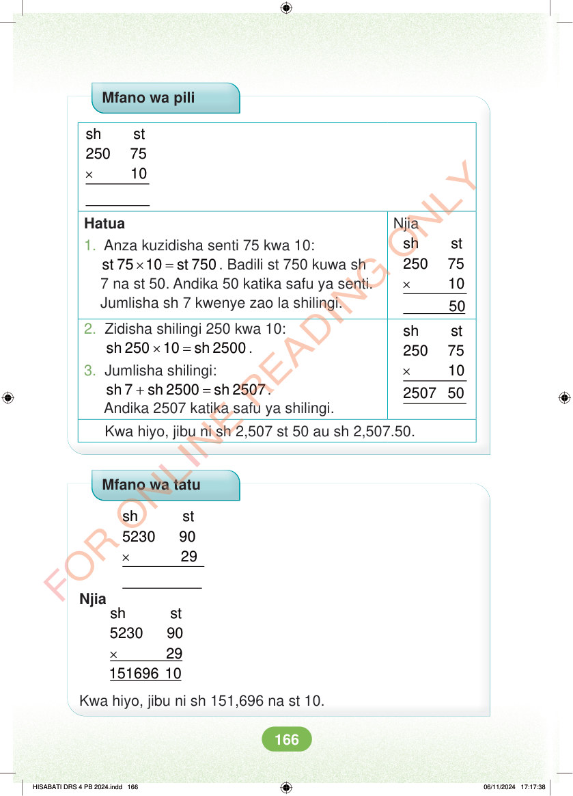

<!DOCTYPE html>
<html lang="sw-TZ"><head><meta charset="utf-8"><meta name="viewport" content="width=device-width,initial-scale=1">
<title>Hisabati: Kitabu cha Mwanafunzi Darasa la Nne</title>
<meta name="title-id" content="pg172_sec001"><meta name="page-section-id" content="181">
<link href="./content/tailwind_output.css" rel="stylesheet"><link href="./assets/libs/fontawesome/css/all.min.css" rel="stylesheet"><link href="./assets/fonts.css" rel="stylesheet">
<style>body{margin:0;background:#eef1ed}main{width:100%;display:flex;justify-content:center;padding:1rem 1rem 5rem;box-sizing:border-box}#content{width:100%;display:flex;justify-content:center}.pdf-page{position:relative;width:min(calc(100vw - 2rem),56rem);aspect-ratio:540.8980102539062/750.6610107421875;background:white;box-shadow:0 4px 24px #0002;overflow:hidden}.pdf-page img{position:absolute;inset:0;width:100%;height:100%;object-fit:fill}</style>
</head><body><main><h1 class="sr-only" id="page-heading">Ukurasa wa 172</h1><div id="content" class="opacity-0"><section role="article" data-section-type="pdf_accessible_page" data-section-id="pg172_sec001" aria-labelledby="page-heading" class="pdf-page"><p class="sr-only" data-id="pg172_gp001_tx001">Mfano wa pili × sh st 250 75 10 Njia × sh st 250 75 10 Hatua 1. Anza kuzidisha senti 75 kwa 10:  × = st 75 10 st 750 . Badili st 750 kuwa sh 7 na st 50. Andika 50 katika safu ya senti. Jumlisha sh 7 kwenye zao la shilingi. × sh st 250 75 10 2507 50 2. Zidisha shilingi 250 kwa 10: × = sh 250 10 sh 2500 . 3. Jumlisha shilingi: + = sh 7 sh 2500 sh 2507. Andika 2507 katika safu ya shilingi. Kwa hiyo, jibu ni sh 2,507 st 50 au sh 2,507.50. Mfano wa tatu × sh st 5230 90 29 Njia × sh st 5230 90 29 151696 10 Kwa hiyo, jibu ni sh 151,696 na st 10. HISABATI DRS 4 PB 2024.indd 166 HISABATI DRS 4 PB 2024.indd 166 06/11/2024 17:17:38 06/11/2024 17:17:38</p></section></div></main><div class="relative z-50" id="interface-container"></div><div class="relative z-50" id="nav-container"></div><script src="./assets/offline-preloader.js"></script><script src="./assets/scorm.js"></script><script src="./assets/base.bundle.local.js"></script></body></html>